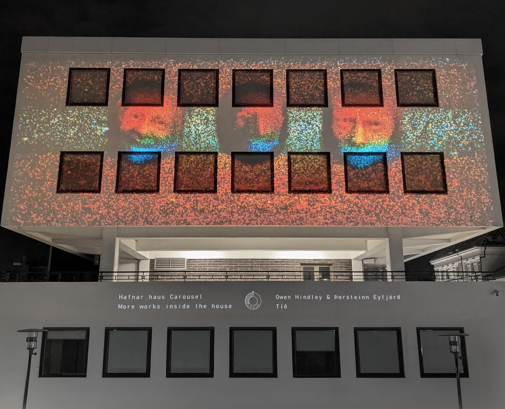
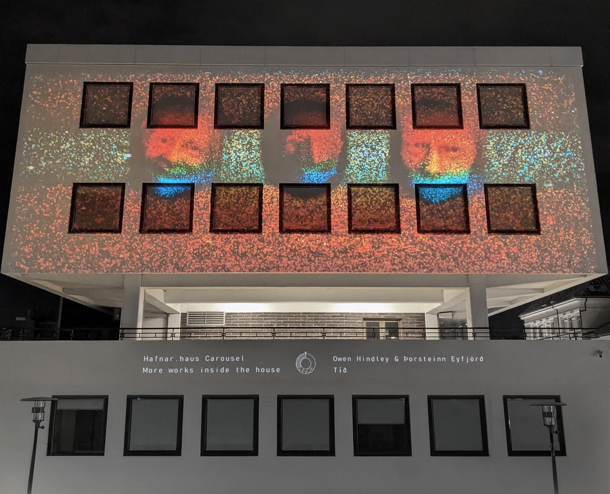

TÃð - Audiovisual projection installation with Þorsteinn Eyfjörð
A tryptych of giant faces loom over you on a cold winter's night, dancing to a pulsing beat.
Maybe you recognise some of them as they fade through the static.
'Tið' is a playful installation by Þorsteinn Eyfjörð and myself for ReykjavÞk's annual Winter Lights Festival (VetrarhátÃð) inspired by the poem 'Barn' by Steinn Steinarr. The giant floating heads are created from LIDAR scans of members of the public, constantly cycling through their self-reported stages of life.
Audio-reactive, and interactive, we invited members of the public to come and have their faces 'scanned' inside the warmth of Hafnarhaus and look at the work whilst enjoying a waffle or two.
Created as part of Hafnar.haus Hringekja, also produced by Þorsteinn and myself, consisting of an exhibition of this and two other projected works by Atli Bollason and Heimir Freyr Hlöðversson, plus over 20 video pieces by members of the creative Hafnarhaus community.
 
